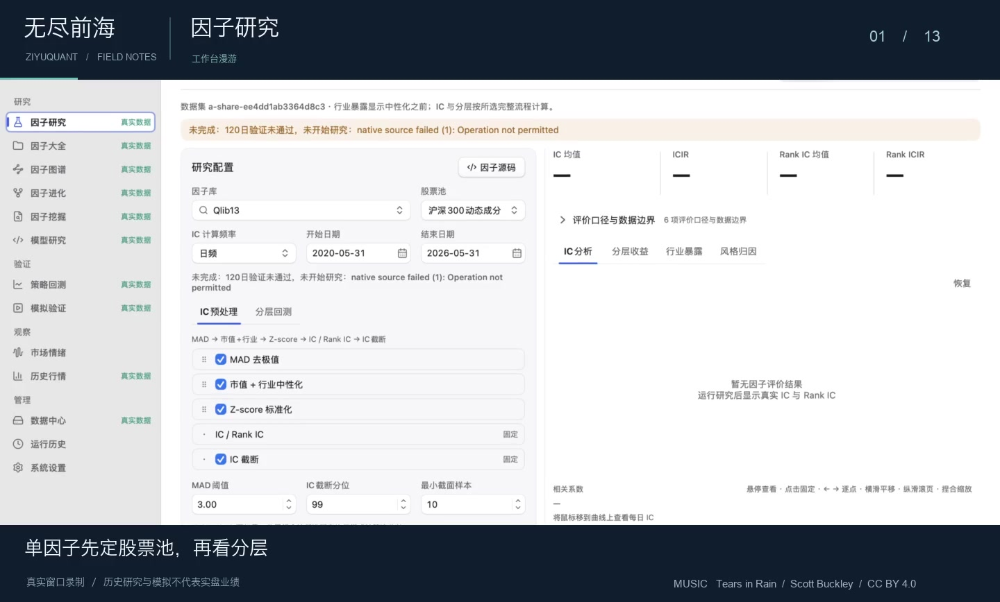
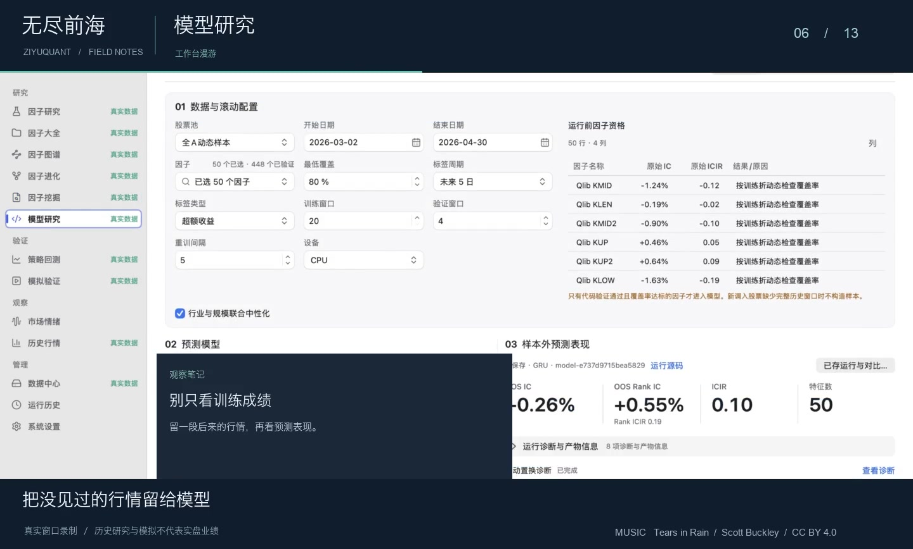
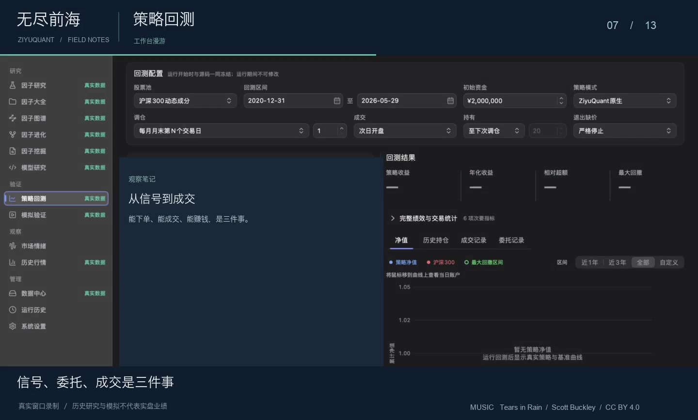
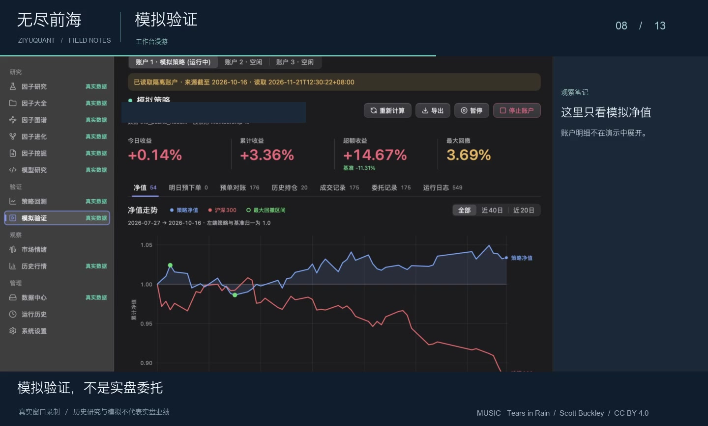
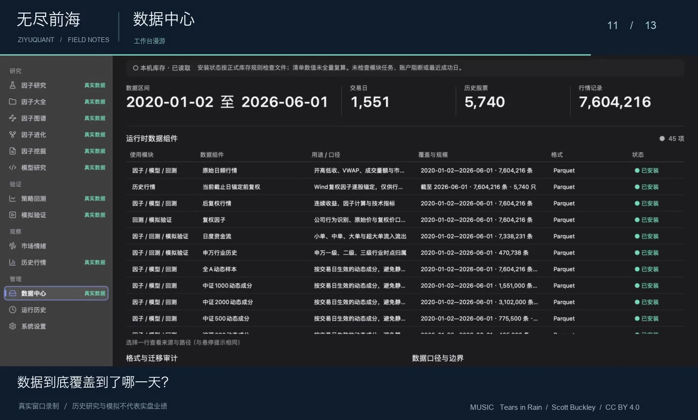
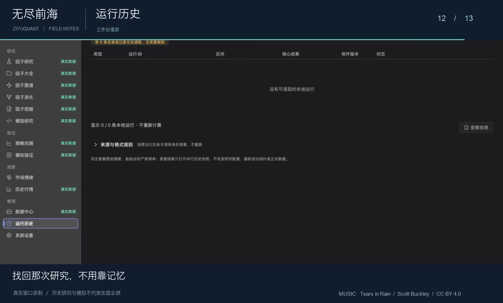
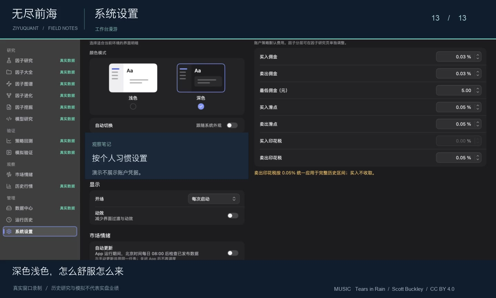

01 / 13实窗截图
因子研究
挑一个因子，看它能不能把后来的强弱排出顺序。除了 IC，我也会看分层收益：是每一层都有规律，还是只靠头尾两层撑场面？


无尽前海 / A 股研究工作台
01 / 整个工作台
前半程浅色，后半程深色。这里只看它怎么用，不用盯着进度条等结果。
因子研究 → 因子大全 → 因子图谱 → 因子进化 → 因子挖掘 → 模型研究 → 策略回测 → 模拟验证 → 市场情绪 → 历史行情 → 数据中心 → 运行历史 → 系统设置
02 / 最近更新
因子挖掘能把研报出处、待选因子和回测成绩放在一起。想知道库里有没有相似的，去图谱找近邻；想换个模型试，保留同一组输入，看它在后来那段行情上的表现。
03 / 分模块看
挑一个因子，看它能不能把后来的强弱排出顺序。除了 IC，我也会看分层收益：是每一层都有规律，还是只靠头尾两层撑场面？

找以前测过的因子，或挑一组一起跑。日频和周频的成绩分开看；没测到的地方留空，比填个零靠谱。

两个因子听着八竿子打不着，选的股票可能很像。先找近邻，再看放进同一组合有没有多大意义。
把一个熟悉的因子改一改，拉回原来的股票池和时间段，跟它的上一代比。新点子不自带加分。

研报读到一半，看到一个好点子，可以把原文出处和候选放在一起。回测成绩够不够进库，门槛自己定。

固定同一组输入，留一段行情不给模型看。最后比这段行情上的预测，比训练分数有意思得多。

看曲线时我最爱追问：拐弯那天做了哪笔交易？从净值翻到委托，就能分清是判断错了，还是根本没成交。

策略先在模拟账本里过日子。明日预单、实际成交和持仓各记各的，不把准备买当成已经买。

有时候指数收红，手里的票却绿了一片。把市场走势和内部强弱摆在一起，盘面就没那么玄乎。
把图翻到那一天，同时看价格和量。单只证券的最新日期和全市场的数据截止日，是两件事。
动手研究前，先来查一眼：这份数据有什么、覆盖到哪天。少一块数据，不能靠一行漂亮数字盖过去。

找回哪天、用什么条件跑过哪项研究。完成和中断都留着，以后不用靠记忆猜当时用了哪套设置。

深浅色、动效和日常偏好在这里改。晚上看图久了，我更愿意把灯关小一点。
